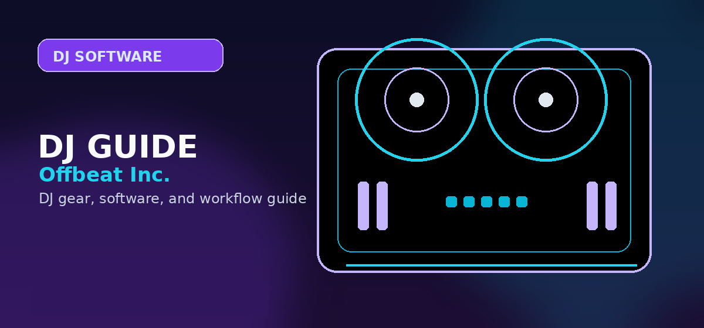

Serato DJ Pro Review 2026: Is It Worth It?
In-depth Serato DJ Pro review 2026 — features, pricing ($14.99/mo), hardware compatibility, and how it compares to Rekordbox and Traktor.

Disclosure: This page uses affiliate links. We may earn a commission at no extra cost to you. Full disclosure →
Serato DJ Pro has long been a staple in the world of digital DJing, renowned for its reliability, intuitive interface, and powerful features. As we move into 2026, Serato DJ Pro continues to set the standard for both aspiring and professional DJs. In this comprehensive review, we’ll explore the latest features, performance enhancements, and how Serato DJ Pro compares to its competitors. If you’re considering upgrading your DJ setup or switching software, read on to discover if Serato DJ Pro 2026 is the right choice for you.
What’s New in Serato DJ Pro 2026?
Serato DJ Pro 2026 brings a host of new features and improvements designed to enhance your DJing experience:
- AI-Powered Track Suggestions: The new AI engine analyzes your set and suggests tracks that match key, BPM, and vibe, making seamless transitions easier than ever.
- Enhanced Stems Separation: Improved real-time stems extraction lets you isolate vocals, drums, bass, and melodies with unprecedented accuracy.
- Cloud Library Sync: Sync your playlists and tracks across devices with secure cloud storage integration.
- Performance Pad Upgrades: Expanded pad modes and customizable mapping for even more creative control.
- Refined User Interface: A cleaner, more responsive interface optimized for high-resolution displays and touchscreens.
Key Features Overview
1. Intuitive Interface
Serato DJ Pro’s interface remains one of the most user-friendly in the industry. The 2026 update introduces a more customizable layout, allowing DJs to tailor their workspace to their unique workflow.
2. Unmatched Reliability
Serato is known for its stability, and the latest version continues this tradition. Whether you’re playing a club gig or a festival, you can trust Serato DJ Pro to perform without glitches.
3. Advanced Effects and Sampler
With over 30 studio-grade effects and a robust sampler, Serato DJ Pro gives you the creative tools to craft unique sets and remixes on the fly.
4. Hardware Compatibility
Serato DJ Pro 2026 supports a wide range of controllers, mixers, and interfaces from leading brands like Pioneer DJ, RANE, Roland, and Denon DJ. Plug-and-play support ensures you can get started quickly with your preferred hardware.
Serato DJ Pro vs. The Competition
How does Serato DJ Pro 2026 stack up against other leading DJ software? Here’s a quick comparison:
| Feature | Serato DJ Pro 2026 | Rekordbox DJ 6 | Traktor Pro 4 | VirtualDJ 2026 |
|---|---|---|---|---|
| AI Track Suggestions | Yes | Yes | No | Yes |
| Stems Separation | Advanced | Basic | Moderate | Advanced |
| Cloud Library Sync | Yes | Yes | No | Yes |
| Hardware Support | Extensive | Extensive | Good | Extensive |
| Interface Customization | High | Moderate | High | High |
| Price (Annual) | $129 | $149 | $99 | $99 |
Pros and Cons
✅ Pros
- Industry-leading reliability and stability
- Powerful AI and stems features
- Broad hardware compatibility
- Regular updates and strong community support
❌ Cons
- Higher price point than some competitors
- Requires a powerful computer for advanced features
Who Should Use Serato DJ Pro 2026?
Serato DJ Pro 2026 is ideal for:
- Professional DJs who need rock-solid performance and advanced features.
- Mobile DJs who value flexibility and hardware compatibility.
- Aspiring DJs looking for an intuitive platform to learn and grow.
If you prioritize reliability, creative tools, and seamless integration with top-tier hardware, Serato DJ Pro is a top contender.
How to Get Serato DJ Pro 2026
Ready to take your DJing to the next level? Get Serato DJ Pro 2026 here and enjoy exclusive discounts through our affiliate link!
Exclusive Offer
Unlock the full potential of your DJ setup with Serato DJ Pro 2026. Click here to purchase now and receive bonus sound packs and extended support!
Final Verdict
Serato DJ Pro 2026 continues to lead the pack with innovative features, unmatched reliability, and a user-friendly interface. Whether you’re spinning at clubs, festivals, or private events, Serato DJ Pro offers everything you need to deliver unforgettable performances. With its powerful AI tools, advanced stems separation, and seamless hardware integration, it’s no wonder Serato remains the go-to choice for DJs worldwide.
Don’t miss out on the latest in DJ technology—upgrade to Serato DJ Pro 2026 today!
Who Should Buy This?
Serato DJ Pro Review 2026 is the right choice if you want professional-grade quality that will last through years of regular use. It suits DJs who have moved past entry-level gear and need something that can handle club environments and regular touring.
- Ideal for: intermediate to advanced DJs upgrading from a first controller
- Not ideal for: first-time buyers on a tight budget who should start with a more forgiving entry-level option
- Best purchased from: an authorised retailer with warranty coverage
Frequently Asked Questions
Is Serato DJ Pro worth the $99/year subscription?
Yes for active DJs. Serato DJ Pro's subscription includes all updates, full library management, 6 hot cues per deck, Flip recording, pitch 'n time, and access to all Serato FX. For DJs on a budget, many Pioneer and Rane controllers bundle Serato DJ Pro for free — check if your hardware includes a license before buying a subscription.
Serato DJ Pro vs Virtual DJ — which is better?
Serato DJ Pro is better for professional club DJs: lower latency, tighter hardware integration with Pioneer and Rane gear, and the industry standard for scratch DJing. Virtual DJ is better for mobile DJs and event DJs: more video mixing features, karaoke support, broader hardware compatibility, and a more complete free version. Both are excellent; choose based on your performance context.
Does Serato DJ Pro work with all DJ controllers?
No — Serato requires certified hardware. Pioneer DDJ series (FLX4, FLX6, 1000SRT), Rane (One, Seventy-Two MK2), and Denon (MC7000, SC Live) are certified and work natively. Non-certified hardware requires a MIDI mapping but loses driver-level integration (jog wheel touch sensitivity, performance pad lighting). Check the Serato 'Supported Hardware' page for the full certified list.
How do I move my Serato library to a new computer?
Copy the '_Serato_' folder (usually in your Music directory) to the same location on the new computer. This transfers crates, cue points, hot cues, loops, and track analysis. Run a full library rescan on the new machine to rebuild the analysis database. Using an external drive for your music library simplifies this process considerably.
What is Serato Flip and how does it work?
Serato Flip ($29 expansion, or included in Pro subscription) records your hot cue button presses as an automated routine that plays back on a track. Use it to auto-skip the breakdown, loop a chorus, or build a custom edit of any track — without editing the original file. Flips travel with the track metadata, so they appear on any Serato installation with Flip enabled.